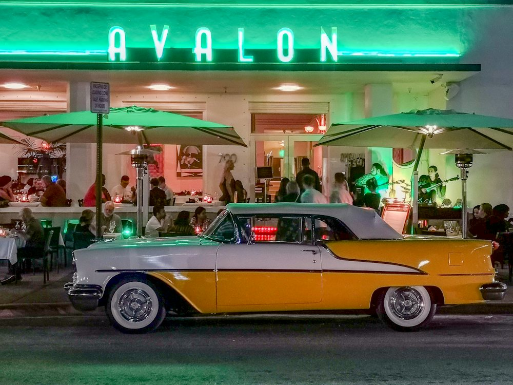

Private Classic Convertible Tour
The most cinematic way to see Miami: a vintage convertible with the top down, a driver-guide who knows every camera angle, and the full eight-stop route at your own pace. Built for couples, birthdays, proposals and content shoots.

At a glance
- Duration
- 2.5 hours
- Group
- Up to 3
- Departs
- Your time
- Meeting point
- Hotel pickup
The most cinematic way to see it. Just your crew in a top-down vintage convertible with a driver-guide who knows every angle. Same stops as the signature tour, at your pace.
What's included
- Private driver-guide
- Vintage convertible, top down
- Golden-hour photo stop on the causeway
- Crew Souvenir Map + bandana
- Pickup in Miami Beach, Downtown or Brickell
Best for
- Couples and small crews
- Birthdays and proposals
- Content creators
Itinerary
 +0:00
+0:001. Ocean Drive
Inspired · the neon hotel stripMeet on the Art Deco strip the first trailer’s look is built on: pastel hotels, neon signage and the Clevelander corner.
 +0:25
+0:252. Lummus Park Beach
Inspired · the beach scenesThe candy-colored lifeguard towers and the sand from the beach scenes. Crew photo stop.
 +0:40
+0:403. Venetian Causeway
Inspired · the causeway driveIsland-hop across the bay on the old drawbridge causeway, skyline rising ahead.
 +0:55
+0:554. Downtown & Biscayne Blvd
Inspired · the arena and the clubThe waterfront arena, the color-changing crown of the tallest tower and the 24-hour superclub from the second trailer.
 +1:10
+1:105. Wynwood
Inspired · the arts districtA 25-minute walk through the murals and warehouse streets of the arts district.
 +1:40
+1:406. Little Haiti
Inspired · the Caribbean quarterCaribbean color, murals and music. Stop by the cultural complex and taste a Haitian patty.
 +2:10
+2:107. Little Havana
Inspired · Calle OchoCafecito and a pastelito at a ventanita, then the domino tables of Máximo Gómez Park.
- +2:35
8. Brickell
Inspired · the skyline shotsThe glass canyon of the financial district, then back over the MacArthur Causeway past PortMiami to Ocean Drive.
Questions about this tour
How many people fit in the classic car?
Up to 3 guests plus your driver-guide. The $600 price is per car, not per person.
Where does the private tour start?
We pick you up in Miami Beach, Downtown or Brickell at the time you choose.
Can we film or shoot photos?
Yes. The route includes a golden-hour photo stop on the causeway, and drone shots can be added.
Is this an official game tour?
No. Leonida Tours is an independent South Florida tour company running unofficial tours. We take you IRL to the real places that inspired the game's world. We are not affiliated with, endorsed or sponsored by any game publisher.
What does reserving mean?
It's free and there's no payment today. We email you to confirm your date before public booking opens, plus 20% off your first tour.
What if it rains?
Every route has covered stops. If a storm cancels your tour, rebook for free or get a full refund.
Reserve now. Ride first.
Tell us your date and group size and we'll confirm your spot before public booking opens, plus 20% off your first tour.
Reserve Private Classic Convertible Tour